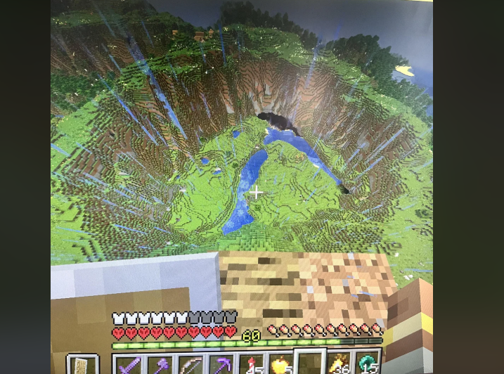

What Makes Me Stop Exploring
I usually spend a decent amount of time exploring before I decide where I want to build. A place can look good at first, but that does not always mean it will work once the base starts getting bigger.

I normally look for somewhere with enough open land for machines, storage, farms, and whatever else I end up adding later. I also like having different terrain nearby instead of building in the middle of one huge flat area.
My Base Location Checklist
There are a few things I usually check before I start moving all of my items into one place.
- Enough open space for the base to grow later
- Water somewhere close to the build
- Different biomes within a reasonable distance
- Room for farms, machines, and storage
- A landscape that is actually interesting to build around
Three Locations I Would Consider
Different locations work better for different kinds of bases. These are three places I would probably consider before making a final choice.
| Location | Best Part | Main Problem |
|---|---|---|
| River Valley | Water, open land, and room to spread out | Large builds can take over the valley pretty quickly |
| Mountain Edge | Good views and natural places for tunnels | Expanding the base can require a lot of digging |
| Dense Forest | Plenty of wood and a more natural-looking area | Trees usually have to be cleared before building much |
What I Would Pick
Out of the three, I would probably start with the river valley. It gives me more room to change my mind later, which happens a lot once a modpack starts introducing machines and builds that take up way more space than I originally expected.
Expedition Controls
Current location: Overworld Base | Danger level: 2